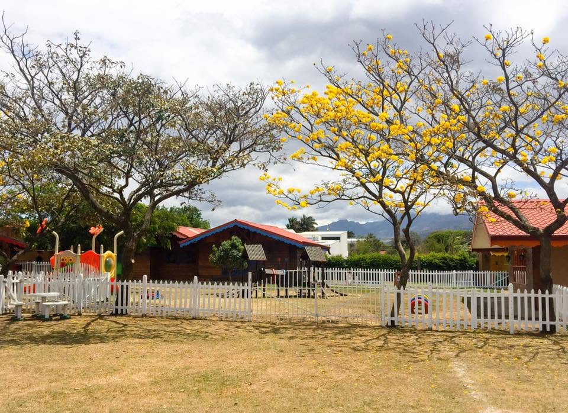

Sala Cuna
3 meses – 1 año
El primer grupo. Los más pequeños, los más cuidados.

No somos solo un preescolar. Somos el lugar donde tu hijo crece con amor, en dos idiomas, desde el primer día.
En KLC el inglés no es una clase extra de 45 minutos. Es el idioma del aula.
Desde la Sala Cuna, tu bebé escucha inglés en las rutinas, los cuentos y el juego. Conforme crece, el idioma evoluciona: en Pre-Kinder ya es la lengua principal de instrucción. Para cuando llegue a Preparatoria, tu hijo habrá pasado años pensando, jugando y aprendiendo en inglés.
Programa avalado por el MEP| Nivel | Grupo | Edad | Uso del inglés |
|---|---|---|---|
| Sala Cuna | Baby Farmers | 3 m – 1 a | Exposición oral: canciones, rutinas, vocabulario básico |
| Pre-Maternal | Red Farmers | 1 – 2 a | Exposición oral ampliada: instrucciones simples, cuentos |
| Maternal | Blue Farmers | 2 años | Inglés como idioma principal de clase; español de apoyo |
| Pre-Kinder | Yellow Farmers | 3 años | Inglés como lengua de instrucción en todas las materias |
| Kinder | Green Farmers | 4 años | Lectoescritura en inglés y español |
| Preparatoria | Purple Farmers | 5 años | Currículo MEP en inglés; preparación para escuela bilingüe |
[FOTO PENDIENTE: interior de Sala Cuna — cunas, área de estimulación, cuidadoras interactuando con bebés]
La mayoría de los centros en Belén y Heredia empiezan a los 2 o 3 años. Nosotros empezamos a los 3 meses.
La Sala Cuna de KLC fue diseñada pensando en los bebés — no como un espacio de guardería, sino como el primer entorno de aprendizaje.
Por cada 3 bebés, hay 1 maestra. Nunca más. Así cada bebé recibe la atención que necesita.
Un espacio íntimo donde conocemos a tu hijo por su nombre, sus hábitos y su carácter desde el primer día.
El Servicio de Emergencias Médicas cubre a los niños dentro y fuera del centro, las 24 horas. Para que puedas ir al trabajo con la mente tranquila.
En KLC cada niño pertenece a un grupo con nombre, color e identidad propios. No son solo "los de 3 años" — son los Yellow Farmers.
3 meses – 1 año
El primer grupo. Los más pequeños, los más cuidados.
1 – 2 años
Los que acaban de descubrir el mundo caminando.
2 años
Curiosos por naturaleza. El inglés empieza a cobrar forma.
3 años
El inglés se convierte en el idioma del día.
4 años
Académicamente sólidos. La granja es su laboratorio.
5 años
Listos para la primaria. Con inglés, con valores, con confianza.
En KLC los niños cuidan animales, siembran semillas y ven crecer lo que plantaron. No en una lámina — en la granja real del centro.
Eso no es un extra. Es parte del método. Los niños aprenden ciencias observando la naturaleza, desarrollan responsabilidad cuidando a los animales y descubren de dónde viene la comida. Todo en inglés, todo con sus manos.
La granja y la huerta son uno de los elementos que más sorprenden a las familias cuando visitan el centro por primera vez. Te invitamos a verlos.
Agenda tu visita para ver la granja en persona[FOTO PENDIENTE: niños con loncheras o en actividad relacionada con alimentación / huerta]
La nutrición no es un tema secundario en KLC. Tenemos una política activa de alimentación saludable y el asesoramiento de una nutricionista.
El proyecto Green Lunchbox enseña a los niños a elegir alimentos saludables, a conocer los colores del plato y a disfrutar comiendo bien. Porque los hábitos que se forman antes de los 6 años son los que duran toda la vida.
Consultas nutricionales dentro del centro disponibles para los padres. Los hábitos saludables empiezan aquí.
Sabemos que confiar el cuidado de tu hijo a otra persona no es una decisión fácil. Por eso en KLC trabajamos cada día para que tengas certeza — no solo tranquilidad.
Contamos con el Servicio de Emergencias Médicas 24 horas, disponible dentro y fuera de las instalaciones y en el área metropolitana. Si algo pasa, actuamos de inmediato.
No usamos castigos. Usamos el Rincón de la Paz: un espacio donde el niño aprende a identificar sus emociones y a resolver conflictos con calma. Basado en los principios de la disciplina positiva.
Perfil de Entrada (marzo), Informe de Progreso (junio) e Informe Final (noviembre). Siempre sabes cómo está avanzando tu hijo.
Los grupos nunca superan su capacidad máxima. En Sala Cuna, 12 bebés. En los demás niveles, entre 15 y 18 niños. Así cada maestro conoce a cada niño.
El programa de KLC está avalado por el Ministerio de Educación Pública de Costa Rica. No somos un centro informal — somos una institución educativa reconocida.
[FOTO PENDIENTE: foto grupal del equipo de teachers y directivos del centro]
Un buen preescolar no es solo un espacio bonito. Es el equipo que lo hace funcionar cada día.
Las maestras de KLC están capacitadas en educación inicial bilingüe, disciplina positiva y desarrollo infantil temprano. Muchas llevan años en el centro — conocen a las familias, recuerdan a los hermanos mayores, celebran los logros de cada niño.
[PENDIENTE: texto biográfico del equipo docente — solicitar al cliente perfil corto de las maestras principales y de la dirección del centro]
Agenda una visita sin costo y sin compromiso. Te mostramos las instalaciones, te presentamos al equipo y respondemos todas tus preguntas.
Agenda tu visitaO llámanos al 2293-5693 · Horario: 7:00 am – 6:00 pm